library(ggplot2)
data(diamonds)3 Data Preparation in Practice: From Raw Data to Insight
The real world is messy.
In real-world settings, data rarely arrives in a clean, analysis-ready format. It often contains missing values, extreme observations, and inconsistent entries that reflect how data is collected in operational systems rather than designed for analysis. By contrast, many datasets encountered in teaching platforms or competitions are carefully curated, with well-defined targets and minimal preprocessing required. While such datasets are valuable for learning, they can give a misleading impression of what data science work typically involves.
This chapter focuses on one of the most underestimated yet indispensable stages of the Data Science Workflow: data preparation. Regardless of how sophisticated a statistical method or machine learning algorithm may be, its results are only as reliable as the data on which it is trained. Preparing data is therefore not a peripheral technical task but a core analytical activity that directly shapes model performance, interpretability, and credibility.
Throughout this chapter, you will develop practical strategies for identifying irregularities in data and deciding how they should be handled. Using visual diagnostics, summary statistics, and principled reasoning, you will learn how preparation choices, such as outlier treatment and missing-value handling, influence both analytical conclusions and downstream modeling results.
Several aspects of data preparation, including outlier detection and missing-value handling, naturally overlap with topics we examine later in the book, particularly Exploratory Data Analysis (Chapter 4) and Data Setup for Modeling (Chapter 6). In practice, these stages are revisited iteratively rather than executed in a strict linear sequence.
What This Chapter Covers
This chapter presents the core techniques required to transform raw data into a form suitable for analysis and modeling. We examine how to identify and diagnose outliers, decide how extreme values should be treated, and detect missing values, including those encoded using nonstandard placeholders. Several imputation strategies for both numerical and categorical variables are introduced and discussed in terms of their practical implications.
The chapter begins with the diamonds dataset, which provides a controlled setting for illustrating fundamental data preparation tasks. It then progresses to a comprehensive case study based on the real-world adult income dataset, where these techniques are applied end to end in a realistic prediction context. Together, these examples demonstrate how data preparation decisions shape the reliability and usefulness of downstream analysis.
3.1 Key Considerations for Data Preparation
Before working with a specific dataset, it is useful to clarify the principles that guide data preparation decisions in practice. Rather than listing techniques, this section highlights the reasoning that underpins effective data preparation across applications and domains.
A first consideration is data quality. Data must be accurate, internally consistent, and free from values that would distort analysis. This requires careful judgment when identifying irregularities, such as missing entries or extreme observations, and deciding whether they reflect data errors or meaningful variation.
A second consideration is feature representation. Raw measurements do not always provide the most informative view of the underlying phenomenon. Constructing derived or simplified features can improve interpretability and modeling effectiveness by aligning variables more closely with the analytical objective.
A third consideration concerns the role of transformation. Variables must ultimately be represented in forms that are compatible with modeling methods. In this chapter, we focus on the conceptual preparation of features, such as identifying variable types, simplifying categories, and resolving inconsistencies, rather than on algorithm-specific encoding and scaling procedures. These formal transformation steps are discussed in greater detail in Chapter 6.
Together, these considerations provide a practical lens for the data preparation steps that follow. Rather than applying preprocessing techniques mechanically, they encourage decisions that are informed by both the structure of the data and the goals of the analysis.
3.2 Data Preparation in Action: The diamonds Dataset
How can we quantify the value of a diamond? Why do two stones that appear nearly identical command markedly different prices? In this section, we bring the concepts of data preparation to life using the diamonds dataset, a rich and structured collection of gem characteristics provided by the ggplot2 package. This dataset serves as a practical setting for exploring how data preparation supports meaningful analysis.
Our central goal is to understand how features such as carat, cut, color, and clarity relate to diamond prices. Before applying any cleaning or transformation steps, however, we must first clarify the analytical objective and the questions that guide it. Effective data preparation begins with a clear understanding of the problem the data is meant to address.
We focus on three guiding questions: which features are most informative for explaining or predicting diamond price; whether systematic pricing patterns emerge across attributes such as carat weight or cut quality; and whether the dataset contains irregularities, including outliers or inconsistent values, that should be addressed prior to modeling.
From a business perspective, answering these questions supports more informed pricing and inventory decisions for jewelers and online retailers. From a data science perspective, it ensures that data preparation choices are aligned with the modeling task rather than applied mechanically. This connection between domain understanding and technical preparation is what makes data preparation both effective and consequential.
Later in the book, we return to the diamonds dataset in Chapter 10, where the features prepared in this chapter are used to build a predictive regression model, completing the progression from raw data to actionable insight.
Overview of the diamonds Dataset
We use the diamonds dataset from the ggplot2 package, which contains detailed information on the physical characteristics and quality ratings of individual diamonds. Each row represents a single diamond, described by variables such as carat weight, cut, color, clarity, and price. Although the dataset is relatively clean, it provides a realistic setting for practicing key data preparation techniques that arise in applied data science. A natural first step in data preparation is to load the dataset and inspect its structure to understand what information is available and how it is represented.
To obtain an overview of the dataset’s structure, we use the str() function:
str(diamonds)
tibble [53,940 × 10] (S3: tbl_df/tbl/data.frame)
$ carat : num [1:53940] 0.23 0.21 0.23 0.29 0.31 0.24 0.24 0.26 0.22 0.23 ...
$ cut : Ord.factor w/ 5 levels "Fair"<"Good"<..: 5 4 2 4 2 3 3 3 1 3 ...
$ color : Ord.factor w/ 7 levels "D"<"E"<"F"<"G"<..: 2 2 2 6 7 7 6 5 2 5 ...
$ clarity: Ord.factor w/ 8 levels "I1"<"SI2"<"SI1"<..: 2 3 5 4 2 6 7 3 4 5 ...
$ depth : num [1:53940] 61.5 59.8 56.9 62.4 63.3 62.8 62.3 61.9 65.1 59.4 ...
$ table : num [1:53940] 55 61 65 58 58 57 57 55 61 61 ...
$ price : int [1:53940] 326 326 327 334 335 336 336 337 337 338 ...
$ x : num [1:53940] 3.95 3.89 4.05 4.2 4.34 3.94 3.95 4.07 3.87 4 ...
$ y : num [1:53940] 3.98 3.84 4.07 4.23 4.35 3.96 3.98 4.11 3.78 4.05 ...
$ z : num [1:53940] 2.43 2.31 2.31 2.63 2.75 2.48 2.47 2.53 2.49 2.39 ...This output reveals that the dataset contains 53940 observations and 10 variables. It includes numerical features such as carat, price, and the physical dimensions x, y, and z, alongside categorical features describing quality attributes, including cut, color, and clarity. These variables form the basis for the price modeling task revisited in Chapter 10. The key variables in the dataset are summarized below:
carat: weight of the diamond (approximately 0.2 to 5.01);cut: quality of the cut (Fair, Good, Very Good, Premium, Ideal);color: color grade, from D (most colorless) to J (least colorless);clarity: clarity grade, from I1 (least clear) to IF (flawless);depth: total depth percentage, calculated as2 * z / (x + y);table: width of the top facet relative to the widest point;x,y,z: physical dimensions in millimeters;price: price in US dollars.
Before cleaning or transforming these variables, it is important to understand how they are represented and what type of information they encode. Different feature types require different preparation strategies. In the next section, we examine how the variables in the diamonds dataset are structured and classified.
3.3 Feature Types and Their Role in Data Preparation
Before detecting outliers or encoding variables, it is essential to understand the types of features present in a dataset. Feature type determines which preprocessing steps are appropriate, how summaries should be interpreted, and how variables enter statistical or machine learning models. Figure 3.1 provides an overview of the feature types most commonly encountered in data science.
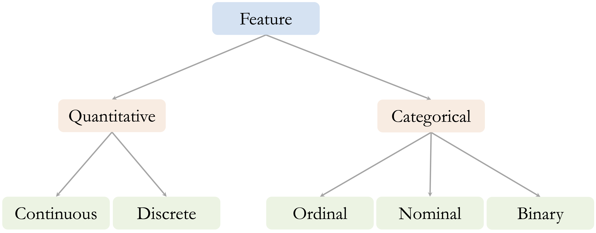
At a high level, features can be divided into two main groups: quantitative (numerical) and categorical (qualitative).
Quantitative features represent measurable quantities. Continuous variables can take any value within a range. In the diamonds dataset, examples include carat, price, and the physical dimensions x, y, and z. Discrete variables, by contrast, take on countable values, typically integers. Although the diamonds dataset does not contain discrete numerical features, common examples in applied settings include counts such as the number of purchases or website visits.
Categorical features describe group membership rather than numeric magnitude. Ordinal variables have a meaningful order, although the spacing between levels is not necessarily uniform. In the diamonds dataset, variables such as cut, color, and clarity fall into this category. For example, color ranges from D (most colorless) to J (least colorless). Nominal variables represent categories without an inherent ordering, such as product types or blood groups. Binary variables consist of exactly two categories, such as “yes” and “no”, and are often encoded numerically as 0 and 1.
Although the diamonds dataset does not include discrete, nominal, or binary features, these variable types are common in real-world data and require distinct preparation strategies, particularly when encoding features for modeling.
In R, the way a variable is stored directly affects how it is handled during analysis. Continuous variables are typically stored as numeric, discrete variables as integer, and categorical variables as factor objects, which may be either ordered or unordered. It is therefore important to verify how R interprets each feature. A variable that is conceptually ordinal, for example, may be treated as an unordered factor unless it is explicitly declared with ordered = TRUE.
With feature types clearly identified and verified, we can now proceed to the next stage of data preparation: detecting outliers that may distort analysis and modeling results.
3.4 Outliers: What They Are and Why They Matter
Outliers are observations that deviate markedly from the overall pattern of a dataset. They may arise from data entry errors, unusual measurement conditions, or genuinely rare but informative events. Regardless of their origin, outliers can have a disproportionate impact on data analysis, influencing summary statistics, distorting visualizations, and affecting the behavior of machine learning models.
In applied settings, the presence of outliers often carries important implications. An unusually large transaction may signal fraudulent activity, an extreme laboratory measurement could reflect a rare medical condition or a faulty instrument, and atypical sensor readings may indicate process instability or equipment failure. Such examples illustrate that outliers are not inherently problematic but often require careful interpretation.
Not all outliers should be treated as errors. Some represent meaningful exceptions that provide valuable insight, while others reflect noise or measurement issues. Deciding how to interpret outliers therefore requires both statistical reasoning and domain knowledge. Treating all extreme values uniformly, either by automatic removal or unquestioned retention, can lead to misleading conclusions.
Outliers are often first identified using visual tools such as boxplots, histograms, and scatter plots, which provide an intuitive view of how observations are distributed. More formal criteria, including z-scores and interquartile range (IQR) thresholds, offer complementary quantitative perspectives. In the next section, we use visual diagnostics to examine how outliers appear in the diamonds dataset and why they matter for subsequent analysis.
3.5 Spotting Outliers with Visual Tools
Visualization provides a natural starting point for identifying outliers, offering an intuitive view of how observations are distributed and where extreme values occur. Visual tools make it easier to distinguish between typical variation and values that may warrant closer scrutiny, whether due to data entry errors, unusual measurement conditions, or genuinely rare cases.
In this section, we illustrate visual outlier detection using the y variable (diamond width) from the diamonds dataset. This variable is particularly well suited for demonstration purposes, as it contains values that fall outside the range expected for real diamonds and therefore highlights how visual diagnostics can reveal implausible or extreme observations before formal modeling begins.
Boxplots: Visualizing and Flagging Outliers
Boxplots provide a concise visual summary of a variable’s distribution by displaying its central tendency, spread, and potential extreme values. They are particularly useful for identifying observations that fall far outside the typical range of the data. As illustrated in Figure 3.2, boxplots represent the interquartile range (IQR) and mark observations lying beyond 1.5 times the IQR from the quartiles as potential outliers.
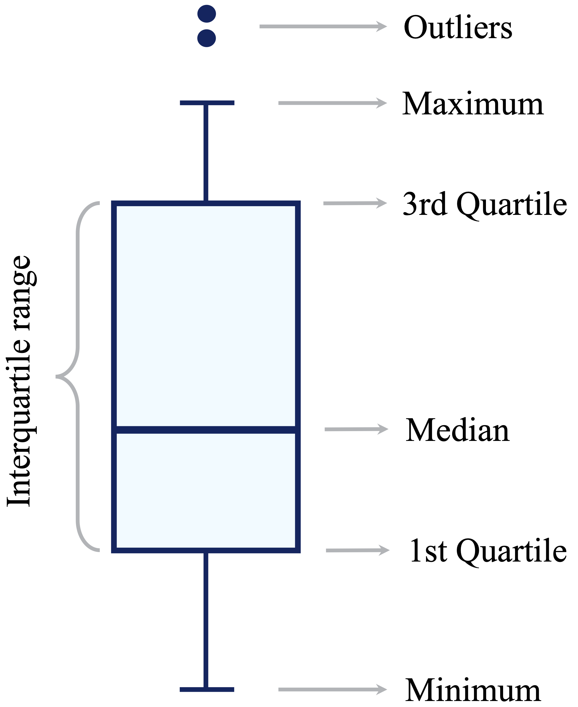
To illustrate this in practice, we apply boxplots to the y variable (diamond width) in the diamonds dataset:
ggplot(data = diamonds) +
geom_boxplot(aes(y = y)) +
labs(title = "Boxplot - Full Scale", y = "Diamond Width (mm)")
ggplot(data = diamonds) +
geom_boxplot(aes(y = y)) +
coord_cartesian(ylim = c(0, 15)) +
labs(title = "Boxplot - Zoomed View", y = "Diamond Width (mm)")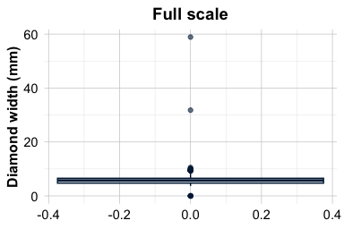
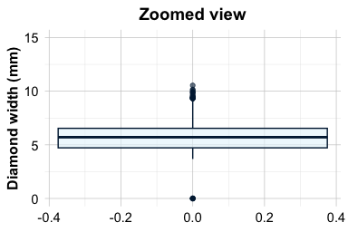
The full-scale boxplot shows that a small number of extreme values stretch the vertical axis, compressing the bulk of the distribution and making typical variation difficult to assess. The zoomed view reveals that most diamond widths lie between approximately 2 and 6 mm, with a limited number of observations falling well outside this range.
This contrast illustrates both the strength and limitation of boxplots: they efficiently flag extreme values, but extreme observations can dominate the visual scale. In practice, combining full-scale and zoomed views helps distinguish between typical variation and values that may require further investigation before modeling.
Practice: Apply the same boxplot-based outlier detection approach to the variables
xandz, which represent the length and depth of diamonds. Create boxplots using both the full range of values and a zoomed-in view, and compare the resulting distributions with those observed fory. Do these variables exhibit similar extreme values or patterns that warrant further investigation?
Histograms: Revealing Outlier Patterns
Histograms provide a complementary perspective to boxplots by displaying how observations are distributed across value ranges. They make it easier to assess the overall shape of a variable, including skewness, concentration, and the relative frequency of extreme values, which may be less apparent in summary-based plots.
The histogram below shows the distribution of the y variable (diamond width) using bins of width 0.5:
ggplot(data = diamonds) +
geom_histogram(aes(x = y), binwidth = 0.5)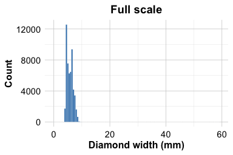
At this scale, most values are concentrated between approximately 2 and 6 mm, while observations at the extremes are compressed and difficult to distinguish. To better examine rare or extreme values, we restrict the vertical axis to a narrower range:
ggplot(data = diamonds) +
geom_histogram(aes(x = y), binwidth = 0.5) +
coord_cartesian(ylim = c(0, 20))
This zoomed view reveals several atypical observations. In particular, the variable contains seven zero values and two unusually large values, one slightly above 30 mm and another close to 60 mm. These observations occur infrequently relative to the main body of the distribution and stand out clearly once the scale is adjusted.
Such values may reflect data entry errors or implausible measurements rather than genuine variation. Used alongside boxplots, histograms help distinguish between typical patterns and values that warrant closer inspection before modeling. In the following section, we discuss principled strategies for handling these irregular observations.
Practice: Create histograms for the variables
xandzusing an appropriate bin width. Examine both the full distribution and a zoomed-in view of the frequency axis. How do the distributional shapes and extreme values compare with those observed fory, and do any values appear to warrant further investigation?
Additional Tools for Visual Outlier Detection
Boxplots and histograms provide effective first impressions of potential outliers, but they are not the only visual tools available. Depending on the analytical context, additional visualizations can offer complementary perspectives on extreme or irregular observations.
Scatter plots are particularly useful for examining relationships between variables and identifying observations that deviate from overall trends, especially in bivariate or multivariate settings. For example, plotting
yagainstpricecan reveal whether extreme diamond widths are associated with unusually high or low prices, a pattern we revisit later in this chapter.Violin plots combine a summary of central tendency with a smoothed density estimate, allowing extreme values to be interpreted in the context of the full distribution rather than in isolation.
Density plots provide a continuous, smoothed view of the distribution, making features such as long tails, skewness, or multiple modes easier to detect than with histograms alone.
These visual tools are most valuable during the early stages of analysis, when the goal is to screen for irregular patterns and develop intuition about the data. As the number of variables increases, however, visual inspection becomes less scalable, and formal statistical techniques are often required to support systematic outlier detection.
Once potential outliers have been identified visually, the next step is to determine how they should be handled. This decision depends on whether extreme values represent data errors, rare but meaningful cases, or variation that should be preserved for modeling.
Practice: Create density plots for the variables
x,y, andzto examine their distributional shapes. Compare the presence of skewness, long tails, or secondary modes across the three dimensions. Do the density plots reveal extreme values or patterns that were less apparent in the boxplots or histograms?
3.6 How to Handle Outliers
Outliers appear in nearly every real-world dataset, and deciding how to handle them is a recurring challenge in data science. An unusually small diamond width or an exceptionally high price may reflect a data entry error, a rare but valid case, or a meaningful signal. Distinguishing between these possibilities requires informed judgment rather than automatic rules.
Once outliers have been identified, either visually or through statistical criteria, the next step is to determine an appropriate response. There is no universally correct strategy. Decisions depend on the nature of the outlier, the context in which the data were collected, and the goals of the analysis or model.
Several practical strategies are commonly used, each with its own trade-offs:
Retain the outlier when it represents a valid observation that may carry important information. In fraud detection, for example, extreme values are often precisely the cases of interest. Similarly, in the
adultincome dataset examined later in this chapter, unusually large values ofcapital.gainmay correspond to genuinely high-income individuals. Removing such observations can reduce predictive power or obscure meaningful variation.Replace the outlier with a missing value when there is strong evidence that it is erroneous. Implausible measurements, such as negative carat values or clearly duplicated records, are often best treated as missing. Replacing them with
NAallows for flexible downstream handling, including imputation strategies discussed later in this chapter.Flag and preserve the outlier by creating an indicator variable (for example,
is_outlier). This approach retains potentially informative observations while allowing models to account explicitly for their special status.Apply data transformations, such as logarithmic or square-root transformations, to reduce the influence of extreme values while preserving relative differences. This strategy is particularly useful for highly skewed numerical variables.
Use modeling techniques that are robust to outliers. Methods such as decision trees, random forests, and median-based estimators are less sensitive to extreme values than models that rely heavily on means or squared errors.
Apply winsorization, which caps extreme values at specified percentiles (for example, the 1st and 99th percentiles). This approach limits the influence of outliers while retaining all observations and can be effective for models that are sensitive to extreme values, such as linear regression.
Remove the outlier only when the value is clearly invalid, cannot be corrected or reasonably imputed, and would otherwise compromise the integrity of the analysis. This option should be considered a last resort rather than a default choice.
In practice, a cautious and transparent approach is essential. Automatically removing outliers may simplify analysis but risks discarding rare yet meaningful information. Thoughtful handling, guided by domain knowledge and analytical objectives, helps ensure that data preparation supports reliable inference and robust modeling.
3.7 Outlier Treatment in Action
Having identified potential outliers, we now demonstrate how to handle them in practice using the diamonds dataset. We focus on the variable y, which measures diamond width. As shown earlier through boxplots and histograms, this feature contains seven zero values and two unusually large values, one slightly above 30 mm and another close to 60 mm. Such values are implausible for real diamonds and are therefore best treated as erroneous measurements rather than meaningful extremes.
To address these values, we replace them with missing values (NA) using the dplyr package. This approach leaves the remainder of the dataset unchanged while allowing problematic entries to be handled flexibly in subsequent steps.
library(dplyr)
diamonds_2 <- mutate(diamonds, y = ifelse(y == 0 | y > 30, NA, y))The mutate() function modifies existing variables or creates new ones within a data frame. In this case, it replaces the original y variable with a cleaned version while leaving all other variables unchanged. The conditional expression inside mutate() uses the ifelse() function, which applies a rule element by element. The logical condition y == 0 | y > 30 identifies values that are equal to zero or greater than 30; for these observations, y is replaced with NA, while all other values are retained.
To assess the effect of this transformation, we examine a summary of the updated variable:
summary(diamonds_2$y)
Min. 1st Qu. Median Mean 3rd Qu. Max. NA's
3.680 4.720 5.710 5.734 6.540 10.540 9The summary shows that nine values have been recoded as missing and illustrates how the range of y has changed. With implausible values removed, the distribution is no longer dominated by extreme observations, yielding a more realistic representation of diamond width. The variable is now better suited for subsequent analysis and modeling. In the next section, we address the missing values introduced by this step and demonstrate how they can be imputed using statistically informed methods.
Practice: Apply the same outlier treatment to the variables
xandz, which represent diamond length and depth. Identify any implausible values, replace them withNA, and usesummary()to evaluate the effect of your changes.
3.8 Missing Values: What They Are and Why They Matter
Missing values are more than blank entries: they often reflect how data were collected and where limitations arise. If not handled carefully, incomplete data can obscure patterns, distort statistical summaries, and mislead predictive models. Identifying and addressing missing values is therefore a critical step before drawing conclusions or fitting algorithms.
As illustrated by the well-known example of Abraham Wald (Section 2.4), missing data are not always random. Wald’s insight came from what was not observed: damage on aircraft that failed to return. In data science, the absence of information can be just as informative as its presence, and overlooking this distinction can lead to flawed assumptions and unreliable results.
In R, missing values are typically represented as NA. In practice, however, real-world datasets often encode missingness using placeholder values such as -1, 999, or 99.9. These codes are easy to overlook and, if left untreated, can quietly undermine analysis. For example, in the cereal dataset from the liver package (Section 13.4), the calories variable uses -1 to indicate missing data. Similarly, in the bank marketing dataset (Section 12.6), the pday variable uses -1 to denote that a client was not previously contacted. Recognizing and recoding such placeholders is therefore an essential first step in data preparation.
A common but risky response to missing data is to remove incomplete observations. While this approach is simple, it can be highly inefficient. Even modest levels of missingness across many variables can result in substantial data loss. For example, if 5% of values are missing in each of 30 features, removing all rows that contain at least one missing entry can eliminate a large fraction of the dataset. Such listwise deletion quickly compounds across features, leading to substantial information loss and potential bias. More principled strategies aim to preserve information while limiting these risks.
Broadly, two main approaches are used to handle missing data:
Imputation, which replaces missing values with plausible estimates based on observed data, allowing all records to be retained.
Removal, which excludes rows or variables containing missing values and is typically reserved for cases where missingness is extensive or uninformative.
In the sections that follow, we examine how to identify missing values in practice and introduce imputation techniques that support more complete, reliable, and interpretable analyses.
3.9 Imputation Techniques
Once missing values have been identified, the next step is to choose an appropriate strategy for estimating them. Imputation is not a purely technical operation: the method selected depends on the structure of the data, the goals of the analysis, and the degree of complexity that is justified. In practice, imputation methods differ along three key dimensions: whether missing values are estimated using only the affected variable or by borrowing information from other features, whether the procedure is deterministic or introduces randomness, and whether uncertainty in the imputed values is explicitly acknowledged.
Several commonly used imputation approaches are outlined below. Mean, median, or mode imputation replaces missing values with a single summary statistic. Mean imputation is typically used for approximately symmetric numerical variables, median imputation for skewed numerical variables, and mode imputation for categorical variables. These methods are univariate and deterministic: each missing value is replaced independently, without using information from other variables. They are simple, fast, and easy to interpret, but they tend to underestimate variability and can weaken relationships between variables.
Random sampling imputation replaces missing values by drawing at random from the observed values of the same variable. Like mean or median imputation, it is univariate, but it is stochastic rather than deterministic. By sampling from the empirical distribution, this approach preserves marginal variability and distributional shape, at the cost of introducing randomness into the completed dataset.
Predictive imputation estimates missing values using relationships with other variables, for example through linear regression, decision trees, or k-nearest neighbors. These methods are multivariate and can produce more realistic imputations when strong associations exist among features, but they rely on modeling assumptions and require additional computation.
Multiple imputation generates several completed datasets by repeating the imputation process and combining results across them. By explicitly accounting for uncertainty in the imputed values, this approach is particularly well suited for statistical inference and uncertainty quantification.
Choosing an imputation strategy therefore involves balancing simplicity, interpretability, distributional fidelity, and statistical validity. For variables with limited missingness and weak dependencies, simple methods may be sufficient. When missingness is more extensive or variables are strongly related, multivariate or multiple imputation approaches generally provide more reliable results. If a variable is missing too frequently to be imputed credibly, excluding it or reconsidering its analytical role may be the most appropriate choice.
Rule of thumb: Use median imputation for quick preprocessing of skewed numerical variables, random sampling imputation for exploratory analysis where distributional shape matters, and multivariate or multiple imputation when relationships between features and uncertainty are central to the analysis.
In the following subsections, we illustrate these principles using the diamonds dataset, first by contrasting imputation based on measures of central tendency with random sampling imputation, and then by briefly discussing more advanced alternatives.
Central Tendency, Distribution Shape, and Imputation
We now illustrate imputation based on measures of central tendency using the variable y (diamond width) from the diamonds dataset. As shown earlier, implausible values such as widths equal to 0 or exceeding 30 mm were recoded as missing (NA). Choosing how to replace these missing values requires understanding how different summary statistics behave, particularly in the presence of skewness and extreme observations.
The mean is the arithmetic average of a set of values and is sensitive to extreme observations. The median is the middle value when observations are ordered and is more robust to outliers. The mode is the most frequently occurring value and is most commonly used for categorical variables. Because these summaries respond differently to extreme values, their suitability for imputation depends critically on the shape of the underlying distribution.
This relationship is illustrated in Figure 3.3. The left panel shows a left-skewed (negatively skewed) distribution, the middle panel shows a symmetric distribution, and the right panel shows a right-skewed (positively skewed) distribution. In the symmetric case, the mean, median, and mode coincide. In the skewed cases, values cluster toward one end of the distribution while a long tail extends in the opposite direction, pulling the mean toward the tail. The median, by contrast, remains more stable. For this reason, median imputation is often preferred for skewed numerical variables, whereas mean imputation may be appropriate when symmetry can reasonably be assumed.
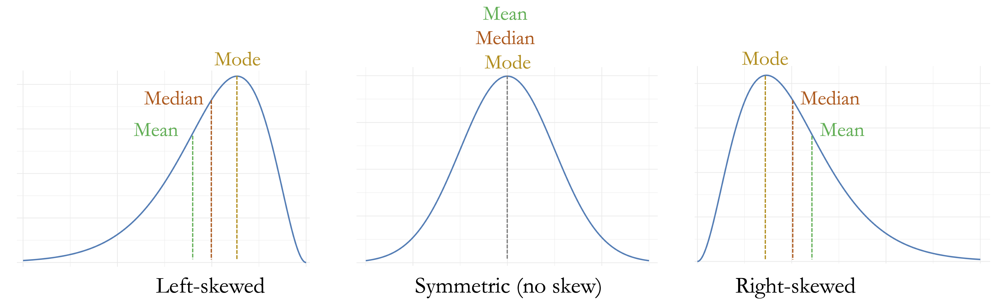
To make this discussion concrete, consider the variable y in the diamonds_2 dataset after outlier treatment. The density plot below shows a slightly right-skewed distribution, with a longer tail toward larger values:
ggplot(data = diamonds_2) +
geom_density(aes(x = y), bw = 0.6)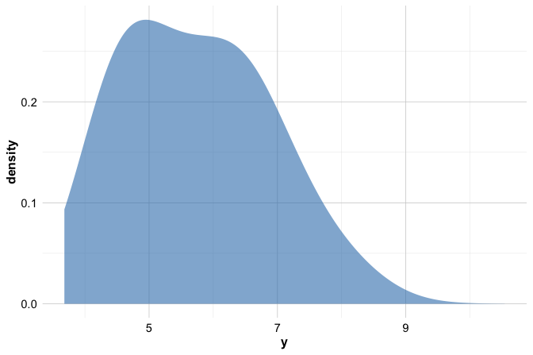
A numerical summary supports this visual impression:
summary(diamonds_2$y)
Min. 1st Qu. Median Mean 3rd Qu. Max. NA's
3.680 4.720 5.710 5.734 6.540 10.540 9The mean of y is slightly larger than the median, reflecting the influence of values in the right tail. Although the difference is modest, it illustrates an important principle: even mild skewness can affect the mean more than the median. In this setting, median imputation therefore provides a more robust choice for handling missing values.
In R, simple imputation based on summary statistics can be implemented using the impute() function from the Hmisc package. The choice of imputation method is controlled through the fun argument, which specifies how missing values are replaced. For numerical variables, common options include mean and median, while mode is typically used for categorical variables. Each option replaces missing entries with a single summary value computed from the observed data. These approaches are deterministic and easy to interpret, but they share an important limitation: because all missing values are replaced by the same quantity, variability in the imputed variable is reduced, and relationships with other variables may be slightly weakened. For the variable y, whose distribution is mildly right-skewed, median imputation therefore provides a natural and robust choice, which we apply as follows:
library(Hmisc)
diamonds_2$y_median <- impute(diamonds_2$y, fun = median)To assess the effect of this imputation, we compare the distribution of y before and after imputation:
ggplot(diamonds) +
geom_histogram(aes(x = y), binwidth = 0.5) +
labs(title = "Before Imputation", x = "Diamond Width (y)")
ggplot(diamonds_2) +
geom_histogram(aes(x = y_median), binwidth = 0.5) +
labs(title = "After Median Imputation", x = "Diamond Width (y)")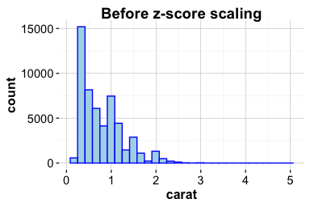
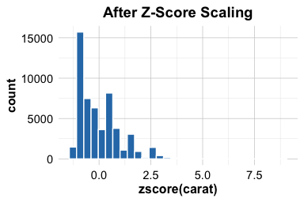
The histograms show that median imputation fills missing values while largely preserving the overall shape of the distribution. At the same time, the repeated insertion of a single value slightly reduces variability. This limitation motivates alternative approaches that better preserve distributional spread, such as random sampling imputation, which we examine next.
Random Sampling Imputation in R
Median imputation provides a robust and interpretable solution for skewed numerical variables, but it replaces all missing values with the same constant. As a result, it can reduce variability and create artificial concentration in the data. Random sampling imputation addresses this limitation by replacing each missing value with a randomly selected observed value from the same variable.
Rather than inserting a single summary statistic, this approach draws replacements from the empirical distribution of the observed data. In doing so, random sampling imputation preserves the marginal distribution more faithfully, including its spread and shape, at the cost of introducing randomness into the completed dataset.
Using the same variable y, we apply random sampling imputation as follows:
diamonds_2$y_random <- impute(diamonds_2$y, fun = "random")Each missing value in y is replaced by a randomly drawn non-missing value from the observed data. Because the replacements are sampled from the existing distribution, variability is maintained. However, the resulting dataset is no longer deterministic: repeating the imputation may yield slightly different values for the previously missing entries.
To assess the effect of random sampling imputation, we compare the relationship between diamond width and price before and after imputation:
ggplot(diamonds) +
geom_point(aes(x = y, y = price), size = 0.1) +
labs(title = "Before Imputation", x = "Diamond Width (y)", y = "Price")
ggplot(diamonds_2) +
geom_point(aes(x = y_random, y = price), size = 0.1) +
labs(title = "After Random Sampling Imputation", x = "Diamond Width (y)", y = "Price")
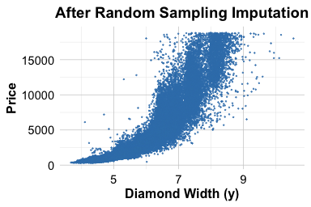
The overall relationship between diamond width and price is preserved, and the imputed values blend naturally into the existing data cloud. Unlike median imputation, random sampling does not introduce visible vertical bands caused by repeated identical values. For these reasons, random sampling imputation is particularly useful for exploratory analysis and visualization. In settings where reproducibility or uncertainty quantification is essential, more structured predictive or multiple imputation approaches are often preferred.
Practice: Apply random sampling imputation to the variables
xandz, which represent diamond length and depth. After identifying implausible values and recoding them asNA, impute the missing entries and examine how the relationships with price change.
Other Imputation Approaches
Beyond the simple imputation strategies demonstrated above, a range of more flexible approaches is commonly used in applied data science. These methods become particularly relevant when missingness is more substantial, when variables are strongly related, or when preserving realistic variability is important.
Predictive imputation leverages relationships among variables to estimate missing values. The aregImpute() function in the Hmisc package implements this idea using additive regression models combined with bootstrapping. By exploiting associations between features, predictive imputation often yields more realistic estimates than single-value replacement, particularly when missingness is moderate and predictors are informative.
When multiple variables contain correlated missing values, multivariate imputation methods are often preferred. The mice (Multivariate Imputation by Chained Equations) package implements an iterative procedure in which each variable with missing data is modeled conditionally on the others. This framework explicitly reflects uncertainty in the imputed values and is especially useful in complex datasets with interdependent features. In Chapter 13.4, we apply mice() to handle missing values in the cereal dataset, illustrating its use in a realistic data preparation workflow.
Although removing incomplete observations using na.omit() is simple, it is rarely advisable in practice. Even modest levels of missingness across several variables can lead to substantial information loss and biased results, particularly when missingness is not random. In most applied analyses, thoughtful imputation provides a more reliable foundation for modeling than wholesale deletion of incomplete records.
3.10 Case Study: Preparing Data to Predict High Earners
How can we determine whether an individual earns more than $50,000 per year based on demographic and occupational characteristics? This question arises in a wide range of applied settings, including economic research, policy analysis, and the development of data-driven decision systems.
In this case study, we work with the adult dataset, originally derived from data collected by the US Census Bureau and made available through the liver package. The dataset includes variables such as age, education, marital status, occupation, and income, and it presents many of the data preparation challenges commonly encountered in practice. Our objective is to prepare the data for predicting whether an individual’s annual income exceeds $50,000, rather than to build a predictive model at this stage.
The focus here is therefore on data preparation tasks: identifying and handling missing values, simplifying and encoding categorical variables, and examining numerical features for potential outliers. These steps are essential for ensuring that the dataset is suitable for downstream modeling. In Chapter 11, we return to the adult dataset to construct and evaluate predictive models using decision trees and random forests (see Section 11.5), completing the transition from raw data to model-based decision making.
3.10.1 Overview of the Dataset
The adult dataset is a widely used benchmark in machine learning for studying income prediction based on demographic and occupational characteristics. It reflects many of the data preparation challenges commonly encountered in real-world applications. To begin, we load the dataset from the liver package:
library(liver)
data(adult)To examine the dataset structure and variable types, we use the str() function:
str(adult)
'data.frame': 48598 obs. of 15 variables:
$ age : int 25 38 28 44 18 34 29 63 24 55 ...
$ workclass : Factor w/ 6 levels "?","Gov","Never-worked",..: 4 4 2 4 1 4 1 5 4 4 ...
$ demogweight : int 226802 89814 336951 160323 103497 198693 227026 104626 369667 104996 ...
$ education : Factor w/ 16 levels "10th","11th",..: 2 12 8 16 16 1 12 15 16 6 ...
$ education_num : int 7 9 12 10 10 6 9 15 10 4 ...
$ marital_status: Factor w/ 5 levels "Divorced","Married",..: 3 2 2 2 3 3 3 2 3 2 ...
$ occupation : Factor w/ 15 levels "?","Adm-clerical",..: 8 6 12 8 1 9 1 11 9 4 ...
$ relationship : Factor w/ 6 levels "Husband","Not-in-family",..: 4 1 1 1 4 2 5 1 5 1 ...
$ race : Factor w/ 5 levels "Amer-Indian-Eskimo",..: 3 5 5 3 5 5 3 5 5 5 ...
$ gender : Factor w/ 2 levels "Female","Male": 2 2 2 2 1 2 2 2 1 2 ...
$ capital_gain : int 0 0 0 7688 0 0 0 3103 0 0 ...
$ capital_loss : int 0 0 0 0 0 0 0 0 0 0 ...
$ hours_per_week: int 40 50 40 40 30 30 40 32 40 10 ...
$ native_country: Factor w/ 41 levels "?","Cambodia",..: 39 39 39 39 39 39 39 39 39 39 ...
$ income : Factor w/ 2 levels "<=50K",">50K": 1 1 2 2 1 1 1 2 1 1 ...The dataset contains 48598 observations and 15 variables. Most variables serve as predictors, while the target variable, income, indicates whether an individual earns more than $50,000 per year (>50K) or not (<=50K). The dataset includes a mixture of numerical and categorical features describing demographic, educational, and economic characteristics.
The main variables are summarized below:
age: age in years (numerical);workclass: employment type (categorical, 6 levels);demogweight: census weighting factor (numerical);education: highest educational attainment (categorical, 16 levels);education_num: years of education (numerical);marital_status: marital status (categorical, 5 levels);occupation: job type (categorical, 15 levels);relationship: household role (categorical, 6 levels);race: racial background (categorical, 5 levels);gender: gender identity (categorical, 2 levels);capital_gain: annual capital gains (numerical);capital_loss: annual capital losses (numerical);hours_per_week: weekly working hours (numerical);native_country: country of origin (categorical, 42 levels);income: income bracket (<=50Kor>50K).
For data preparation purposes, the variables can be grouped as follows. Numerical variables include age, demogweight, education_num, capital_gain, capital_loss, and hours_per_week. The variables gender and income are binary. The variable education is ordinal, with levels ordered from “Preschool” to “Doctorate”. The remaining categorical variables, namely workclass, marital_status, occupation, relationship, race, and native_country, are nominal.
To gain an initial overview of distributions and identify potential issues, we inspect summary statistics using:
summary(adult)
age workclass demogweight education education_num marital_status
Min. :17.0 ? : 2794 Min. : 12285 HS-grad :15750 Min. : 1.00 Divorced : 6613
1st Qu.:28.0 Gov : 6536 1st Qu.: 117550 Some-college:10860 1st Qu.: 9.00 Married :22847
Median :37.0 Never-worked: 10 Median : 178215 Bachelors : 7962 Median :10.00 Never-married:16096
Mean :38.6 Private :33780 Mean : 189685 Masters : 2627 Mean :10.06 Separated : 1526
3rd Qu.:48.0 Self-emp : 5457 3rd Qu.: 237713 Assoc-voc : 2058 3rd Qu.:12.00 Widowed : 1516
Max. :90.0 Without-pay : 21 Max. :1490400 11th : 1812 Max. :16.00
(Other) : 7529
occupation relationship race gender capital_gain
Craft-repair : 6096 Husband :19537 Amer-Indian-Eskimo: 470 Female:16156 Min. : 0.0
Prof-specialty : 6071 Not-in-family :12546 Asian-Pac-Islander: 1504 Male :32442 1st Qu.: 0.0
Exec-managerial: 6019 Other-relative: 1506 Black : 4675 Median : 0.0
Adm-clerical : 5603 Own-child : 7577 Other : 403 Mean : 582.4
Sales : 5470 Unmarried : 5118 White :41546 3rd Qu.: 0.0
Other-service : 4920 Wife : 2314 Max. :41310.0
(Other) :14419
capital_loss hours_per_week native_country income
Min. : 0.00 Min. : 1.00 United-States:43613 <=50K:37155
1st Qu.: 0.00 1st Qu.:40.00 Mexico : 949 >50K :11443
Median : 0.00 Median :40.00 ? : 847
Mean : 87.94 Mean :40.37 Philippines : 292
3rd Qu.: 0.00 3rd Qu.:45.00 Germany : 206
Max. :4356.00 Max. :99.00 Puerto-Rico : 184
(Other) : 2507This overview provides the starting point for the data preparation steps that follow. We begin by identifying and handling missing values, an essential task for ensuring the completeness and reliability of the dataset before modeling.
3.10.2 Handling Missing Values
Inspection of the dataset using summary() reveals that three variables, workclass, occupation, and native_country, contain missing entries. In this dataset, however, missing values are not encoded as NA but as the string "?", a placeholder commonly used in public datasets such as those from the UCI Machine Learning Repository. Because R does not automatically treat "?" as missing, these values must be recoded explicitly:
adult[adult == "?"] <- NAThis command replaces all occurrences of the string "?" in the dataset with NA. The logical expression adult == "?" creates a matrix of TRUE and FALSE values, indicating where the placeholder appears. Assigning NA to these positions ensures that R correctly recognizes the affected entries as missing values in subsequent analyses.
After recoding, we apply droplevels() to remove unused factor levels. This step helps avoid complications in later stages, particularly when encoding categorical variables for modeling:
adult <- droplevels(adult)To assess the extent of missingness, we visualize missing values using the gg_miss_var() function from the naniar package, which displays both counts and percentages of missing entries by variable:
library(naniar)
gg_miss_var(adult, show_pct = TRUE)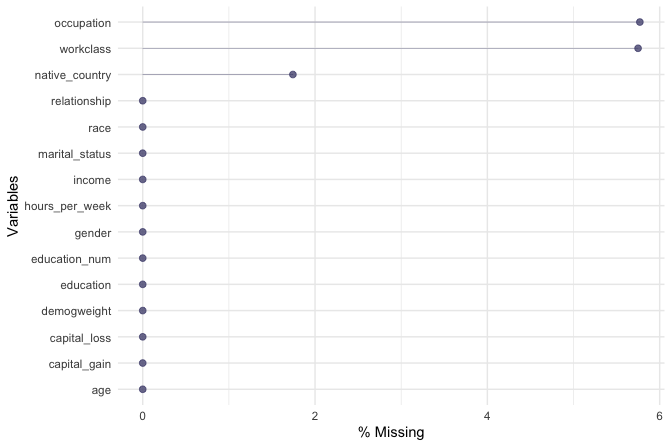
The resulting plot confirms that missing values occur only in three categorical features: workclass with 2794 entries, occupation with 2804 entries, and native_country with 847 entries. Rather than removing incomplete observations, which would lead to unnecessary information loss, we choose to impute these missing values. Because all three variables are categorical and preserving the empirical distribution of categories is desirable at this stage, we apply random sampling imputation using the impute() function from the Hmisc package:
library(Hmisc)
adult$workclass <- impute(adult$workclass, fun = "random")
adult$native_country <- impute(adult$native_country, fun = "random")
adult$occupation <- impute(adult$occupation, fun = "random")Finally, we re-examine the pattern of missingness to confirm that all missing values have been addressed:
gg_miss_var(adult, show_pct = TRUE)
With missing values handled, the dataset is now complete and ready for the next stage of preparation: simplifying and encoding categorical features for modeling.
Practice: Replace the random sampling imputation used above with an alternative strategy, such as mode imputation for the categorical variables
workclass,occupation, andnative_country. Compare the resulting category frequencies with those obtained using random sampling. How do different imputation choices affect the distribution of these variables, and what implications might this have for downstream modeling?
Preparing Categorical Features
Categorical variables with many distinct levels can pose challenges for both interpretation and modeling, particularly by increasing model complexity and sparsity. In the adult dataset, the variables native_country and workclass contain a relatively large number of categories. To improve interpretability and reduce dimensionality, we group related categories into broader, more meaningful classes.
We begin with the variable native_country, which contains 40 distinct country labels. Treating each country as a separate category would substantially expand the feature space without necessarily improving predictive performance. Instead, we group countries into broader geographic regions that reflect cultural and linguistic proximity.
Specifically, we define the following regions: Europe (France, Germany, Greece, Hungary, Ireland, Italy, Netherlands, Poland, Portugal, United Kingdom, Yugoslavia), North America (United States, Canada, and outlying US territories), Latin America (including Mexico, Central America, and parts of South America), the Caribbean (Jamaica, Haiti, Trinidad and Tobago), and Asia (including East, South, and Southeast Asian countries).
This reclassification is implemented using the fct_collapse() function from the forcats package, which allows multiple factor levels to be combined into a smaller set of user-defined categories:
library(forcats)
Europe <- c("France", "Germany", "Greece", "Hungary", "Ireland", "Italy", "Netherlands", "Poland", "Portugal", "United-Kingdom", "Yugoslavia")
North_America <- c("United-States", "Canada", "Outlying-US(Guam-USVI-etc)")
Latin_America <- c("Mexico", "El-Salvador", "Guatemala", "Honduras", "Nicaragua", "Cuba", "Dominican-Republic", "Puerto-Rico", "Colombia", "Ecuador", "Peru")
Caribbean <- c("Jamaica", "Haiti", "Trinidad&Tobago")
Asia <- c("Cambodia", "China", "Hong-Kong", "India", "Iran", "Japan", "Laos", "Philippines", "South", "Taiwan", "Thailand", "Vietnam")
adult$native_country <- fct_collapse(
adult$native_country,
"Europe" = Europe,
"North America" = North_America,
"Latin America" = Latin_America,
"Caribbean" = Caribbean,
"Asia" = Asia
)To verify the result, we inspect the frequency table of the updated variable:
table(adult$native_country)
Asia North America Latin America Europe Caribbean
1108 44582 1899 797 212A similar simplification is applied to the workclass variable. Two levels, "Never-worked" and "Without-pay", occur infrequently and both describe individuals outside formal employment. Treating these categories separately adds sparsity without providing meaningful distinction. We therefore merge them into a single category, Unemployed:
adult$workclass <- fct_collapse( adult$workclass,
"Unemployed" = c("Never-worked", "Without-pay"))Again, we verify the recoding using a frequency table:
table(adult$workclass)
Gov Unemployed Private Self-emp
6919 32 35851 5796By grouping native_country into broader regions and simplifying workclass, we reduce categorical sparsity while preserving interpretability. These steps help ensure that the dataset is well suited for modeling methods that are sensitive to high-cardinality categorical features.
3.10.3 Handling Outliers
We now examine the variable capital_loss from the adult dataset to assess the presence and relevance of outliers. This variable records the amount of financial loss (in U.S. dollars) reported by an individual in a given year due to the sale of assets such as stocks or property. It is a natural candidate for outlier analysis, as it contains a large proportion of zero values alongside a small number of relatively large observations. We begin by inspecting basic summary statistics:
summary(adult$capital_loss)
Min. 1st Qu. Median Mean 3rd Qu. Max.
0.00 0.00 0.00 87.94 0.00 4356.00The output shows that the minimum value is 0 and the maximum is 4356. More than 75% of observations are equal to zero, reflecting the fact that most individuals do not sell assets at a loss in a given year. The median, 0, is substantially lower than the mean, 87.94, indicating a strongly right-skewed distribution driven by a small number of individuals reporting substantial financial losses. To explore this structure visually, we examine both a boxplot and a histogram:
ggplot(data = adult) +
geom_boxplot(aes(y = capital_loss)) +
ggtitle("Boxplot of Capital Loss")
ggplot(data = adult) +
geom_histogram(aes(x = capital_loss)) +
ggtitle("Histogram of Capital Loss")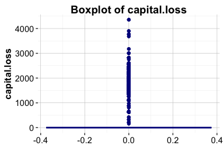
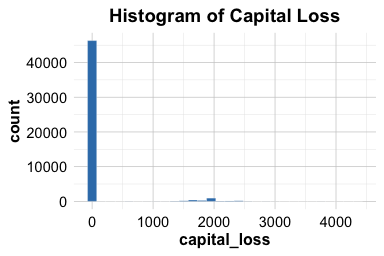
Both plots confirm the strong positive skew. Most individuals report no capital loss, while a small number exhibit substantially higher values, with visible concentrations around 2,000. To better understand the distribution among individuals who do report capital loss, we restrict attention to observations for which capital_loss > 0:
subset_adult <- subset(adult, capital_loss > 0)
ggplot(data = subset_adult) +
geom_boxplot(aes(y = capital_loss)) +
ggtitle("Boxplot of Nonzero Capital Loss")
ggplot(data = subset_adult) +
geom_histogram(aes(x = capital_loss)) +
ggtitle("Histogram of Nonzero Capital Loss")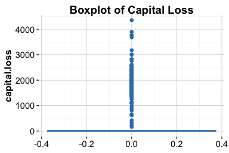
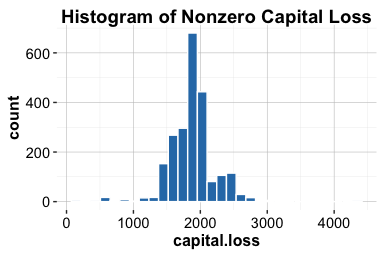
Within this subset, most values lie below 1,000 and 3,000. Importantly, the distribution of these larger values appears relatively smooth and approximately symmetric, providing no indication of data entry errors or anomalous observations. Instead, these values plausibly reflect genuine financial losses incurred by a small group of individuals.
Based on this evidence, we retain the extreme values in capital_loss. Removing them would risk discarding meaningful information about individuals with substantial financial losses. If these values later prove influential during modeling, alternative strategies may be considered, such as applying a log or square-root transformation, creating a binary indicator for the presence of capital loss, or using winsorization to limit the influence of extreme observations.
Practice: Repeat this outlier analysis for the variable
capital_gain. Compare its distribution to that ofcapital_loss, paying particular attention to the proportion of zero values, the degree of skewness, and the presence of extreme observations. Based on your findings, would you handle outliers incapital_gainin the same way?
3.11 Chapter Summary and Takeaways
This chapter examined the practical foundations of data preparation, showing how raw and inconsistent data can be transformed into a structured and reliable form suitable for analysis and modeling. Through hands-on work with the diamonds and adult datasets, we addressed common challenges such as identifying and handling outliers, detecting and imputing missing values, and resolving inconsistencies in real-world data.
A central theme of the chapter was that data preparation is not a purely mechanical process. Decisions about how to treat outliers, encode categorical variables, or impute missing values must be guided by an understanding of the data-generating process and the goals of the analysis. Poor preparation can obscure meaningful patterns, while thoughtful preprocessing strengthens interpretability and model reliability.
These techniques form a critical foundation for all subsequent stages of the Data Science Workflow. Without clean and well-prepared data, even the most advanced methods are unlikely to produce credible results.
In the next chapter, we build on this foundation by turning to exploratory data analysis, using visualization and summary statistics to investigate patterns, relationships, and potential signals that inform model development.
3.12 Exercises
The exercises in this chapter strengthen both conceptual understanding and practical skills in data preparation. They progress from foundational questions on data types and missingness to hands-on applications using the diamonds, adult, and house_price datasets. Together, they reinforce key tasks such as identifying outliers, imputing missing values, and cleaning categorical features, and conclude with self-reflection on the role of data preparation in reliable, ethical, and interpretable analysis.
Conceptual Questions
Explain the difference between continuous and discrete numerical variables, and provide a real-world example of each.
Describe how ordinal and nominal categorical variables differ. Provide one example for each type.
Explain how the
typeof()andclass()functions differ in R, and why both may be relevant when preparing data for modeling.Explain why it is important to identify the correct data types before modeling.
Discuss the advantages and disadvantages of removing outliers versus applying a transformation.
In a dataset where 25% of income values are missing, explain which imputation strategy you would use and justify your choice.
Explain why outlier detection should often be performed separately for numerical and categorical variables. Provide one example for each type.
Discuss how data preparation choices, such as imputation or outlier removal, can influence the fairness and interpretability of a predictive model.
Describe how reproducibility can be ensured during data preparation. What practices or tools in R help document cleaning and transformation steps effectively?
Hands-On Practice: Data Preparation for diamonds Dataset
Use
summary()to inspect thediamondsdataset. What patterns or irregularities do you observe?Classify all variables in the
diamondsdataset as numerical, ordinal, or nominal.Create histograms of
caratandprice. Describe their distributions and note any skewness or gaps.Identify outliers in the
xvariable using boxplots and histograms. If outliers are found, handle them using a method similar to the one applied toyin Section 3.4.Repeat the outlier detection process for the
zvariable and comment on the results.Examine the
depthvariable. Suggest an appropriate method to detect and address outliers in this case.Compute summary statistics for the variables
x,y, andzafter outlier handling. How do the results differ from the original summaries?Visualize the relationship between
caratandpriceusing a scatter plot. What pattern do you observe, and how might outliers influence it?Using the
dplyrpackage, create a new variable representing the volume of each diamond (x * y * z). Summarize and visualize this variable to detect any unrealistic or extreme values.
Hands-On Practice: Data Preparation for adult Dataset
Load the
adultdataset from the liver package and classify its categorical variables as nominal or ordinal.Compute the proportion of individuals earning more than $50K and interpret what this reveals about the income distribution.
Create a boxplot and histogram of
capital_gain. Describe any patterns, anomalies, or extreme values.Identify outliers in
capital_gainand suggest an appropriate method for handling them.Compute and visualize a correlation matrix for the numerical variables. What do the correlations reveal about the relationships among features?
Use the
cut()function to groupageinto three categories: Young (\(\le 30\)), Middle-aged (31–50), and Senior (\(>50\)). Name the new variableAge_Group.Calculate the mean
capital_gainfor eachAge_Group. What trends do you observe?Create a binary variable indicating whether an individual has nonzero
capital_gain, and use it to produce an exploratory plot.Use
fct_collapse()to group the education levels into broader categories. Propose at least three meaningful groupings and justify your choices.Define a new variable
net.capitalas the difference betweencapital_gainandcapital_loss. Visualize its distribution and comment on your findings.Investigate the relationship between
hours_per_weekand income level using boxplots or violin plots. What differences do you observe between income groups?Detect missing or undefined values in the
occupationvariable and replace them with an appropriate imputation method. Justify your choice.Examine whether combining certain rare
native_countrycategories (for example, by continent or region) improves interpretability without losing important variation. Discuss your reasoning.
Hands-On Practice: Data Preparation for house_price Dataset
Load the
house_pricedataset from the liver package. Identify variables with missing values and describe any observable patterns of missingness.Detect outliers in
SalePriceusing boxplots and histograms. Discuss whether they appear to be data entry errors or meaningful extremes.Apply median imputation to one variable with missing data and comment on how the imputed values affect the summary statistics.
Suggest two or more improvements you would make to prepare this dataset for modeling.
Use the
skimrpackage (orsummary()) to generate an overview of all variables. Which variables may require transformation or grouping before modeling?Create a scatter plot of
GrLivAreaversusSalePrice. Identify any potential non-linear relationships or influential points that may warrant further investigation.Compute the correlation between
OverallQual,GrLivArea, andSalePrice. What insights do these relationships provide about property value drivers?Create a new categorical feature by grouping houses into price tiers (e.g., Low, Medium, High) based on quantiles of
SalePrice. Visualize the distribution ofOverallQualacross these groups and interpret your findings.
Self-Reflection
Explain how your approach to handling outliers might differ between patient temperature data and income data.
Consider a model that performs well during training but poorly in production. Reflect on how decisions made during data preparation could contribute to this discrepancy.
Reflect on a dataset you have worked with (or use the
house_pricedataset). Which data preparation steps would you revise based on the techniques covered in this chapter?Describe how data preparation choices, such as grouping categories or removing extreme values, can influence the fairness and interpretability of machine learning models.
Summarize the most important lesson you learned from working through this chapter’s exercises. How will it change the way you approach raw data in future projects?